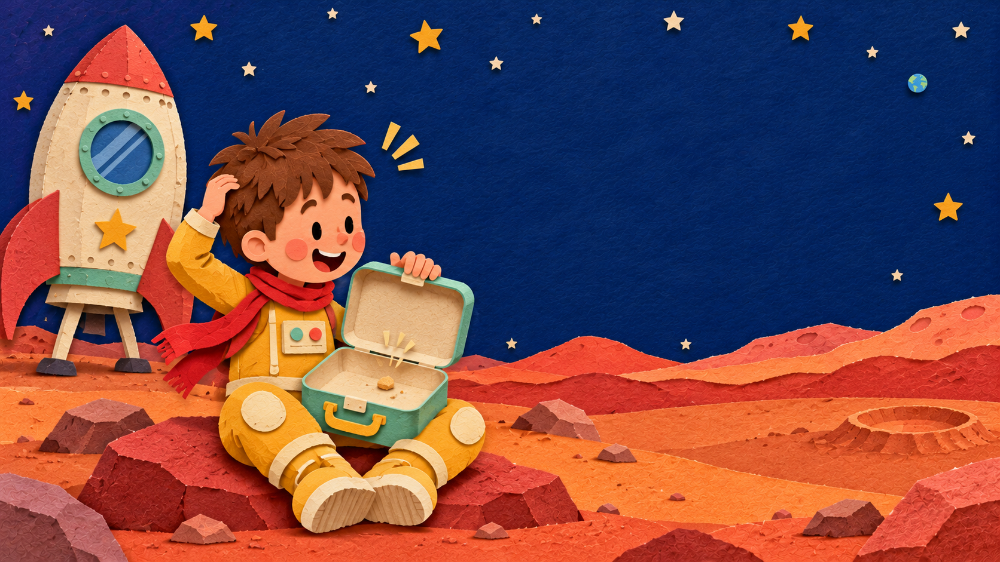

Page 7 of 7100%
PAGE 7 · OH, NO
Oh no—no snacks.
Johnny opened his lunchbox. It was empty. Mars was amazing, but even explorers need a cookie.
Next time: Pack snacks first. The end… for now.
Open the lunchbox to check again.

PAGE 7 · OH, NO
Johnny opened his lunchbox. It was empty. Mars was amazing, but even explorers need a cookie.
Open the lunchbox to check again.